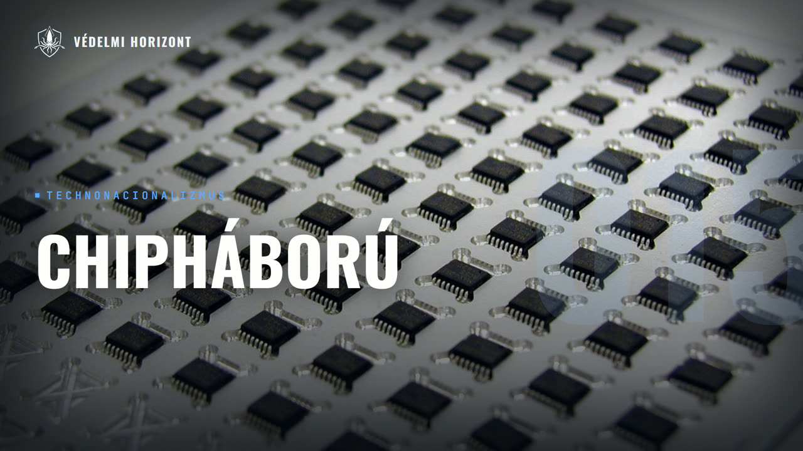

VÉDELMI HORIZONT #015 – Technonacionalizmus és a globális chipháború

Leírás
Résztvevők: Zsebeházy Bálint, Kovács Marcell
Üdvözöljük a Védelmi Horizont kutatóműhely tizenötödik adásában!
Ebben az adásban Kovács Marcell, mérnökinformatikus, politológus-közgazdász, a Védelmi Horizont szerkesztője a technonacionalizmus fogalmát járja körül Zsebeházy Bálinttal. Kiindulásképp azt tisztázzák, mit jelent, amikor egy ország technológiai képességeit nemzetbiztonsági szempontok szerint kezeli, majd visszamennek a hidegháború korszakáig, amikor az űrverseny és az atomprogramok mentén formálódott ez a gondolkodás. Innen jutnak el Tajvanra: hogyan született meg a TSMC Morris Chang ötletéből, és miért alakult ki monopolhelyzet a hollandiai ASML lézertechnológiája körül? Szó esik az amerikai eszköztárról is, az exportkorlátozásoktól a Chips and Science Actig, arról, hogy Európa első European Chips Actje miért bukott meg, és hogy Magyarországnak, az Infineon és a Semilab révén, milyen szerény szerep jutott ebben az ellátási láncban. Zárásként azt is körbejárják, hogy Európa hol veszíthetne teret Amerikával és Kínával szemben, és hol lehetne mégis esélye.
Leirat beszélőnként
Üdv mindenkinek! Ez itt a Védelmi Horizont, az a podcast, ahol gazdasági, hadiipari és biztonságpolitikai szempontok alapján nézünk rá ugyanarra a témára, egyszerre, egyasztalnál. A nevem Zsebeházi Bálint, és most ketten ülünk a mikrofonok mögött. Velem szemben Kovás Marcell, mérnökinformatikus politológus-közgazdász, tehát polihisztor, a Védelmi Horizont szerkesztője. Szia, Marci!
Sziasztok, üdvözlöm a hallgatókat!
Na, a mai adásban a csipekről és azoknak a geopolitikai jelentőségéről fogunk beszélni, de emellett fogunk iparpolitikai, politológiai témákat is érinteni. Kezdjük is egy fogalmi bevezetővel. Itt ez a fogalmi bevezető nem olyan lesz, mint a szokásos, hogy egy ilyen nagyobb kontextust ad, hanem itt bele is csapnánk, hogy mi az a technonacionalizmus, és igen, mi az a technonacionalizmus, így röviden.
Hát így röviden összefoglalva a technonacionalizmus az, amikor egy ország technológiai képességét azt olyan szempontok szerint is nézi, hogy milyen nemzetbiztonsági prioritások vannak e mögött. Vagyis nem szintán azt nézzük, hogy milyen technológiánk van, vagy hogy hogy tudunk a legfejlettebbek lenni a világon, hanem milyen nemzetbiztonsági szempontok vannak a technológia, Feladti kontrollunk a technológia használata vagy az ezzel való különböző biztonságpolitikai védelmi szempontok szerint.
És mi ennek a történelmi kontextussal, mióta beszélünk technolacionalizmussal?
A technolacionalizmus leinkább a hidegháború korszakára jellemző, hiszen ugye a két nagy blokk, a nyugati blokk Amerika vezetésével és a Szovjetunió komoly konfliktusban voltak, és ennek a fő egyik platforma a technológia volt, gondoljunk akár az űrversenyre is. Mindkét blokk próbálta a saját technológiáját fejleszteni, erősíteni. Nagyon komoly állami finanszírozás is volt e mögött. Gondoljunk az atomprogramokra például. Mindkét ország saját maga finanszírozta, nem piaci lapon készültek ezek az atomprogramok. Mindketten kontrollálni akarták a technológiát. Mert ha kontrollálod a technológiát, az egy nagyon komoly nemzetbiztonsági szempont. Ha te rendelkezel egy olyan technológiával vagy hadipari dologgal, amivel a másik nem, akkor komoly előnyre teszelszert. Vagy ha igazából mind a kettő rendelkeztek ugyanazzal a szintű haditeknológiával, de valami olyan technológiai tudás kell, amit a te blokkod, országod nem tud előállítani, viszont a másik igen, akkor kvázi egy zsarolási potenciálá válik ez. Ha mondjuk háborúba lép a két különböző blokk vagy ország, akkor esetleg megtagadhatja a másiktól ezt a technológiát, és onnantól ő nem tudja utánpótolni a készleteit, vagy nem tudja továbbfejleszteni a technológiát meg a rakadlétszinten. És hát ezután az történt, ugye véget ért a hideg háború, a Verica győzelmével. És azt láthattuk, hogy Amerika elkezdte lebontani erre a techno-nacionalizmusra épülő gondolkodását, hiszen már azt érezték, hogy hát ők a világ domináns hatalma, ők kontrollálják a technológiát, erre jelenleg nincs tovább szükség. Sőt, összességével teljes mértékben az egész iparpolitikát eltemették a idegháború bukásával, mert úgy látták, hogy már az államnak nincs egy ilyen iparösztönző szerepe, ennyire nem kell beleavatkoznia ebbe. Itt mellékes megjegyzésként teszem, hogy később egyetlen ország volt, ahol újra felfutott az iparpolitikus, sose felejtették el ezt Kína, és ezt vezetett egyébként a felemelkedéséhez is. És így egy techno-globalizmus korába léptünk, ahol globalizálódott a technológia, és azvel pörítéssel, hogy hogyan tudjuk gyakorlatilag outsource-olni, kihelyezni, külföldre vinni a termelés egy részét a technológiai láncokban, a technológiai értékláncokból olyan helyekre, ahol lesz a legolcsóbb megcsinálni. És innentől nem a mi területünkön, vagy a mi környezetünkben, vagy mi szövetségi blokkunkban akartuk kontrollálni a technológiát, mert már nem a nemzetbiztonsági szempontok voltak a legfontosabbak, hanem a lehető legolcsóbb helyre tettük, hiszen az volt a fontos, hogy minél piaci alapon hatékonyabb álljon a technológia, Kutatása, fejlesztése, az invenciók innovációvállalkítása, piacra dobása, termelése, hiszen sokkal drágább bármilyen dolgot legyártani nagyjából a nyugati világban, mintha mondjuk ezt elvinnénk keletre. És hát így történt az, hogy teljes mértékben kívül került Amerikán és gyakorlatilag az ő közvetlen környezetén kívül több olyan fontos technológia is, amit azt érezték előbb-utóbb, hogy nem tudtak irányítani. Covid vége környékén jött el egy ilyen új Sputnik fillanat Amerikával, amikor teljesen lesokkolódott az amerikai elit, mert azt látták, hogy az ő általuk tervezett, az ő vállalaték által tervezett és Tajvanra legyártott mikrocsippeket Kína arra használja, hogy létrehozta a világ egyik első hiperszónikus rakétáját, amire az amerikai állam és az ő szövetségiség nem voltak képesek. És lassókkolódtak, hogy egyszerűen egy olyan technológiát, amivel Kína nem rendelkezik, de ők igen, a Kínek arra tudják használni, hogy valami olyan fejüvet fejlesztenek, amit ők egyszerűen nem tudnak, és védekezni sem tudnak ellene. És ez volt az egyik nagy sokk, igazából már régóta látszott, hogy erre tendál a dolog, de ez volt, ami igazán beütött az amerikai elitnek, és ekkor kezdtek el újra foglalkozni azzal, hogy hát lehet kontrollálnunk kéne a technológiát. Lehet kontrollálnunk kéne ezt a technológiai láncot. És különösen a mikrochip iparban ez egy nagyon nehéz dolog. És leginkább azért, mert a mikrochip iparákra gondolunk, ez egy olyan értéklánc, ahol hatalmas tudás és tőke szükséges, hogy bármit csináljunk. Egyszerűen olyan mértékű tudás is tőke kell bizonyos lépéseihez a mikrocsip tervezésnek, gyártásnak, tesztelésnek vagy bármelyik lépésének a folyamatnak, hogy egy ország ezt alig-alig tudja az egészet egyben megcsinálni. Ennek a tudásnak egy jelentős része külföldön volt, és majd mindenveszünk gondolom az ellátási ráncot, majd végignézzük, hogy hol vannak ezek a különböző folyamatok.
Igen, ez érdekes, egyébként még a mondandód elejében, ami engem megragadott kicsit, hogy ugye itt arról beszéltél, hogy az állam igazából rábízta a piacra a technológiát, és nekem felmerült most az a dilemma bennem ezzel kapcsolatban, hogy Tulajdonképpen mit gondolsz, hogy honnan jön az innováció? Inkább a magán vagy az állami szektor termel ki az innovációt? Mert hogy most, amit felvázoltál még a legelején, abból nekem úgy tűnt ki, hogy igazából az állam ennek a mozgatórugója iparpolitikán keresztül, és azok az innovációk csorognak rá a magánszektorba, vagy pont fordítva van éppen?
Hát itt először azt határolnám el, hogy alapból szerintem két dolgot érdemes vizsgálni, hogy létezik invenció, találmány és innováció, ez pedig, amikor a találmányt piacra viszik. Ez a kettő fontos dolog is. Hát először, amíg nincsen valami találmányunk, nem tudjuk piacra vinni. Szerintem mindkettőt vizsgáljuk meg. Az invencióvonalnál muszáj azt látnunk, hogy persze rengeteg vállalat investál rengeteg kutatásba és rengeteg új találmányhoz is jutnak, főleg a nagy Big Tech vállalatok például ilyenek. De még mindig egy jelentős része a találmányoknak az állom által szponzorálkozató intézetekből jön. És ez Amerikában is így van. Mondjuk most Donald Trump jelentősen kezdi megvágni ezeknek a finanszírozását, de a fő tudományos mozgató rugó a komoly nagy áttörések ezáltalában állami laborokból jön. Egyszerűen más nem fog mondjuk alaptermészettudományos kutatásokat megfinanszírozni egy Google-nek, nem feltétlenül. Erre kell mondjuk fizikakutatásokat szponzorálni. Valamennyire mondjuk teszik, mert mondjuk kvantumszámítógépeket szeretnének, de csomószor olyan a feltalálási folyamat, hogy nem látjuk, hogy mire lesz jó. Sokszor tudományágak kvázi öncélúnak tűnnek. Nem tudom, gondoljunk mondjuk a gráffelméletre. Rengeteg ideig eszméletlenül egy öncélú dolognak tűnt, és amikor Elkezdték, a modell mikrochippek megjelentek, és széles körben elterjedtek a számítógépek, akkor utána rájöttek az emberek, hogy hát amúgy a számítástechnika ez egy kiváló dolog. De addig ez egy öncélú tudományág volt, amit matematikusok is saját hobbiukként követtek el. És persze itt a vállalatisztikának is komoly szerepe van, viszont rátérve arra, hogy hogyan születik az innováció, Hát itt már szerintem sokkal-sokkal nagyobb a piac szerepe. Az állam nem igazán tudja jól piacra vinni a dolgokat. Az állam szerepét maximum abba bontakozik ki, hogy mondjuk létrehoz különböző startup inkubátorokat, vagy akár valamennyire megtámogatja ezeket. Akár a pénzügyi támogatást tudom elképzelni az állam oldaláról, de a komoly Komoly munkát és a piacra vitelt nem az állam szokta elkövetni, hanem egyértelműen vállalatok. És még arra reflektálnék, hogy ezt azért pontosítaném, hogy az állam a piacra bízta a technológiát, mert azért ez így nem teljesen igaz. Inkább azt mondanám, hogy jelentősen a költségfelfogás vált a legfontosabbá. Továbbra is részt vett az állami szereplőként a technológiában, ahogy előbb említettem a kutatási szférában leginkább, nem feltétlen a piacra vitelvem. De már az volt az elgondolás, hogy ha valamit piacra akarunk vinni, akkor azt a lehető legolcsóbban tegyük, mert úgy lehet a legjobban eladmenni a profitabilitás mellett, vagy leginkább leugrálni a nemzetközi piacat.
És még talán a kontextushoz egyébként, az érdekes lehet a hallgatók számára, hogy mit jelent az, hogy kettős felhasználású rendszerek és kettős felhasználású technológia a csipek, és ez akkor hogyan lesz egy ilyen geopolitikai sebőzhetőség?
Hát igen, összességében alapból az összes kettős felhasználású technológiára megjelenik a probléma, merre minél beszélünk. A kettős felhasználású azt jelenti, hogy lehet civil dolgokra is használni, mondjuk be lehet rakni egy mosógépbe, egy autóba, egy szerverbe, vagy most az annyira divatos adatközpontokba. Vagy berakhatjuk egy hadipari felhasználású dologba, és mondjuk egy hiperszónikus rakétával, ahogy nemrég említettem, ami felébresztette az amerikai létet, hogy jaj, mi történik itt. És hát ezt nem tudjuk megkülönböztetni, miben fog bekerülni. Épp ezért, hogyha limitáljuk ezt a technológiát egy másik országnak, akkor a civil szférájában is visszavágjuk a felhasználását, ami... Hát ellenérzést okozhat a másik népben, szépen fogalmazva. És ezt a kettőt sem is nem tudjuk elválaszolni, mert a kettő Kettő felhasználás egyszerűen ér meg is. Rengeteg különböző technológiai ágazat, kettős felhasználás, úgy gondoljunk akár az űriparra, egy műholdat is nagyon sok dologra lehet használni. Hogy műholdat felrakunk egy kamerával, hát azt használhatjuk arra, hogy nem tudom, a termőföldeket vizsgáljuk meg, vagy arra is, hogy kémkedjünk egy másik ország után. A mikrochipipereleg is ilyen. Ahogy említettem, belerakhatjuk egy autóba, mondjuk egy autógyárban, vagy belerakhatjuk egy tankba is, hát mind a kettő gurul, mind a kettő jármű. Csak hát ugye más lesz a végkifejlet, mert az egyikkel mondjuk ártani akarnak nekünk, a másikkal meg a munkahelyére közlekedik valaki. És hát ebben van a komoly geopolitikai konfliktus, hogy Ha egy nemzetbiztonsági felfogásban gondolkodunk a technológiáról, akkor mindenben meg kell vizsgálnunk, hogy hogy lehetett folyó hadiparra is felhasználni. És hát az a nagy valóság, hogy elég sok mindent fel lehet hadiparra használni, még a legesleg egyszerűbb technológiát is. Mondjuk arra, hogy itt talán még egy konceptjárat is egy lövegtöltétyára lehet alakítani, elég könnyen azért nagyon könnyű az emberi pusztításra való hajlamnak így a kreativitására hatni, hogy mondjam, hogy így az elég kreatívek az emberek, hogy hogy lehet valamit szívű felhasználás hadiparra használni. És épp ezért, mivel hát Különösen Amerika szeretné megtartani a hegemón helyzetét, ezért elkezdett ezen gondolkodni, hogy na basszus, most akkor itt mit tudunk tenni annál kapcsán, hogy megőrizzük a technológia felette kontrollunkat is, hogy a vettélytársaink, a legnagyobb versenytársaink, akik próbálják minket utolérni, vagy csak különböző régióban így versenyeznek velünk és próbálják ott a hatalmunkat megingatni. Azok hogyan használtják az általunk exportált dolgokat, vagy a mi tudásunkra épült dolgokat, mert a mikrocsippek például amerikai tudással épült, a tajvani tudással legyártott technológia. Ezt hogyan használtják arra, hogy a mi befolyásunk a gyengítség.
Igen, ez is elég érdekes volt az orosz-ukrán háború kapcsán is, amikor mosógépekből kiszedett mikrocsippeket találtak az ukránok az orosz rakétákba beszerelve, drónokba beszerelve. Térjünk át akkor, hogy igazából végigbeszéltük, hogy mik azok a csippek, hogyan kapcsolódnak a geopolitikához, és itt van egy nagyon fontos kurcszó, úgy gondolom, ez az ellátási lánc. Hogy néz ki ennek az anatómiája? Gyakorlatilag milyen országok kapcsolódnak be elsősorban ebbe? Aztán majd szereplőnként így végig mehetünk akár rajtuk, hogy ő miért fontos, hogyan kapcsolódik, mit csinál pontosan?
Hát akkor először nézzük el szerintem, hogy kik a legfontosabb szereplő. Gondolom a mikrochip iparáira gondoltál elsőként.
Igen, nyilván.
A legfontosabb szereplők meg kell tervezni a mikrocsipet, meg le kell gyártani a mikrocsipet, ami rengeteg különböző lépésből áll. Szerintem kezdjük először, meg utána meg egyébként package-eliv, tesztelik, minden különböző lépése van még ennek a folyamatnak. Nézzük először a tervezés oldaláról, mert ugye amíg nincsen megtervezve a mikrocsip, nincs mit legyártani. Ebben nagyon erős, nagyon erős monopól helyzetben áll Amerika. Alapból léteznek a különböző design szoftverek, amikkel tervezik ezeket a csippeket, meg erre vannak hardware leíró nyelvek is. Ezekben teljes Amerika dominanciája, talán ebben érhető jelenleg szinte legnagyobb lemaradás a Kínának, hogy Egyszerűen a tudás, hogy hogy lehet egy olyan szoftvert, harveleiró nyelvet, bármilyet készíteni, amivel megtervezhetjük egy chipet, és ezt hogyan használjuk, és hogyan tervezzünk fel egy jó chipet, ami tényleg hatékony lesz, ebben nagyon erős Amerika dominanciája. Itt olyan vállalatok vannak leginkább, mint az Nvidia, az AMD. Ezek kifejezetten úgynevezett Fabless vállalatok, ez azt jelenti, hogy ők csak tervezéssel foglalkoznak. Itt még megjelennek olyan vállalatok is, akik ilyen úgynevezett Integrated Device Manufacturers. Ez azt jelenti, hogy ők a teljes ellátási láncot egymaguk kezelik. Egyébként egy jó ideig ez volt a fő tendencia, hogy ők megtervezik a chipet, legyártják, csomagolják, tesztelik, mindent ők csinálnak, ők is árusítják. Az Intel leginkább erre a legjobb példa. Régen több ilyen vállalat is volt, a legtöbb így kvázi meghalt ebben a versenyben, de régen egy új, de így egyértelműen ez volt az uralkodó. És beillesztenék egy melléktehatóját, remélem nem viszi félre kicsit a magyarázatot, hogy sokáig ezek a vállalatok uralták ezt az értékláncot, akik mindent csináltak benne. És utána jött egy zseniális ötlet Tajvanon, hogy mikor Morris Chang nem jutott vezérigazgatószékhez Amerikában, pedig ő nagyon szeretett volna az lenni egy elég nagy mikrocsip vállalatnál akkor, hogy ott hazacsábították, És azt találták ki, hogy létrehoznak egy ilyen kutatónabort, és később egy olyan vállalatra vált ez a dolog, ami egyértelműen csak mikrocsip gyártásra specializálódott. És abban a korban így a nagy konszenzus az volt, hogy ez egy életképtelen dolog. Mi ez a hülyeség, hogy valaki majd csak gyártásra specializálódik, ezt egyben kell az egészet csinálni. És rengeteg pénzt kapott a tajvani államtól, nagyon sok pénzt belefektetett be a tajvani állam, és az volt a szerencséje Tajvannak, hogy a népességének egy egész komoly része Amerikába tanult, és komoly műszaki tudásra emelkezett, és ezzel a nagy pénzelőket is hazacsábították. És így született meg éppként a TSMC, a mai TSMC. És hát láthatjuk, egy rendkívül jó üzleti modell ez. Ez adott lehetőséget egyébként később egy startup boom-nak Amerikában, olyan startupoknak, akik pedig a tervezésre tudtak specializálódni. Így jött létre a mai Nvidia és több más vállalat is, és így tudtak létrejönni az ilyen febles, csak tervezi vállalatok. Na szóval visszatérve, ugye vannak akik mindent csinálnak az értéklányhoz, vagy vannak akik egy-egy részére specializálódnak, most megnéztük a tervezést. Ezután ezt le kell gyártani, de ugye a gyártáshoz rengeteg dolog kell. Kell alapból a wafer, ez a szilícium lapka, amire gyártasz. Ennek a nagy részét egyébként mondjuk Japánban gyártják, de nekik azért nem felétlen van olyan komoly kontrollkefelet. Különböző vegyi anyagok, mindenféle hozzávaló, és a legfontosabb, hát valahogy így meg kell csinálni a gyártás, ehhez pedig szükség van ilyen ultraviolet, ultra UV lézelekre. Az EUV lézerek a legújabb modern technológiák, mert előtte másfajta technológiát használtak, ilyen nagyjából azt hiszem 14 nanométer alatti csíkszélességű, csak ezzel a lézerteknológiával lehet gyártani. Sokáig vitatott is volt egyébként, hogy egyáltalán elkészíthető-e egy ilyen gép, ez egy hatalmas áttörés volt, hogy ezt meg tudták csinálni, és ezt a lézert egyetlen egyvállalatúja gyártana világon, ez a Hollandiában lévő ASML. Ez az egyetlen komoly vállalat Európának az egész értéklencben. Még talán egyet hozzákapcsolnék, ami Európában fontos, az ASML, hogy tudja működtetni ezt a laser technológiát, ehhez Zeiss optikát használnak, ez is egy európai vállalat. Még talán ők a fontos szereplők, mert nélkülük nem működne ez a gép. És mikor megvan, amire legyártjuk, az összes vegyanyag, a lézerek, minden ezt, az egészet üzemeltetni kell tudni. Létre kell hozni egyébként nagyjából ilyen, általában hardware elérő nyelvekhez ilyen könyvtárakat, így mondanám, nagyjából könyvtárakat szoktak létrehozni, amit tudnak használni, nekik gyártani szeretnének. És ez egész folyamatot egyben, ezt egy párvállal tudja megcsinálni a tényleges gyártást. A legnagyobb szereplő a modern logikai chip gyártásban. Most a TSMC, amit említettem, nagyjából így 90%-át a modern logikai csúcs-csíkszélesség gyártásnak ők végzik. És hát ennek egy nagyon komoly része szinte vitathatatlanul csak Tajvanon történt. Az elmúlt időben történt ebben elmozdulás. Három különböző fázisban, három nagy TSMC üzem épül Phoenixben a Chips and Science-ek egyik utóhatásaként Amerikában. Tehát valamelyik még építés alatt van, valamelyik már egyébként üzembe van helyezve. És egyébként az a terv, hogy Európában, Németországon is lesz egy TSMC üzem. De a németek már sok módon próbálkoztak. A European Chipset keretében egyébként próbáltak az Intel-lel egy üzemet Magdeburgban. Az Intel-t alapján, hogy Magdeburgban legyen egy üzem. Hát ez úgy elbukott, hogy elképesztő módon, mert egyszerűen nem lett volna kereslet az Intel-nek ott gyártó termékeire. A TSMC meg azért szerint Dresdában akar most építeni egy üzemet. Szóval ők a gyártásban a fő központi elem, és akkor ugye még vannak, akik használják ezeket a csippeket, hogy beépítik a termékekbe. Ez is egy komoly probléma azért Amerikának, mert a termékek összes szerelése se ott történik, hanem mondjuk Kínában. És akkor ez egy újabb komoly probléma, hogy azért a legmodernabb csúsz technológiás csippekkel úgy kapcsolnának le Kínát, hogy igazából mindent ott szerelünk össze. Ez egy nem egyszerű dolog. De itt azt is látni kell, hogy az a szerencsé, azért a legtöbb dolog, amit felsoroltam, hogy mire használjunk mikrocsippeket, hát abban nem kell egy legújabb technológia. Például egy autóban mondjuk, ha egy nem tudom, önvezető autó, vagy bármiről van szó, kell egy központi, nagyon modern csipp, ami tényleg vezéri, a többi azért, nem tudom, egy tíz évvel ezelőtti technológiát is újra beleépítünk. Azért ott nem a legmodernabb technológiára van szükség, és egy mosógépbe se a legújabb AMD által tervezett, nem tudom, Intel által legyártott chipet feleslegesen leberakni, minden melyre van szükség. Szóval nagyjából így néz ki az egész ellátási láncérték lánc. És ez egy erősen globalizált dolog, de a különböző csomóponttal, hogy amit tettem a tervezésben, szinte exkluzíven Amerikának van monopóliuma. A szükséges lézerek, a lézerek a géphez, ami nagyjából lézer tudja biztosítani lézersugarat a folyamathoz, abban Európa egyértelmű monopól helyzetben van, és magában a gyártása meg hát Tajvan egy szinte monopól helyzetben van. Láthatjuk, hogy például Kínának ebben az értékláncban nem igazán van Egyértelmű napolhelyzete, mert aki, hogy ott szerelnek össze minden, de hát azt könnyű arrébb mozgatni, ez egy kicsi hozzállatértékű folyamat.
Igen, tehát akkor megnézzük a szereplőket és fel van adva a lecke akkor a technonacionalistáknak, hogy hogyan reagál az állam és milyen policy-kat csinál, hogy ténylegesen akkor most van egy globális ellátási lánc, de ahogy feltételezem, hogy akkor a technonacionalisták egy sokkal szuverénebb irányba vinnék el. És az ennek kérdésem igazából, hogy milyen poliszikat alkotnak erre a különböző államok. És akkor kezdjük Amerikával, hogy pont ezt a chip szektet meg a science szektet már többször is mondtad, de hogy konkrétan akkor mikor jött rá erre az állam, hogy ez probléma és hogyan kezdett el ezzel kapcsolatba lépni?
Ahogy említettem, a magnia bátorés az akkor volt, amikor megijedtek őt Kína egyszerű mezőtechnológiájukkal megerőzni őket a hadiparba. Hát, először is azt mondanám, hogy ugye a hideg háborúban egy technolocenizmus korszakában éltünk, utána egy technoglobalizmus követte ezt, de lehetetlen visszatérni egy technolocenista, teljesen tiszta technolocenista korba. Egyszerűen túl globalizált a világ, és őszintén olyan tőke és tudás szükséges ehhez, hogy én nem tudom azt elképzelni, hogy egy ország területén ezt az egészet meg lehetne csinálni. Ez egyszerűen Nincs ez a tudás és pénz senkinek a világon, hogy az egész ellátási láncot a saját országába ezt behelyezze. Szóval ezért egyetlen egy megoldás van, egy ilyen managed interdependence, ilyen managelt függést kialakítani, hogy megpróbálják csökkenteni a kockázatokat. Ennek az egyik lépése volt egyébként, amit elébb említettem, hogy Elég komoly támogatást adott az amerikai állam a TSMC-nek, mert hát ez elég komoly nyomást helyezett rá, hogy Phoenix, Arizona-ban építsenek egy-két üzemet, hogy azért ne csak Tajvanon történjen a gyártás. Viszont azért ennek elég komolyan ellenáll valamilyen szinten Tajvan, mert nekik meg van egy olyan politikájuk, ilyen n plusz egy politika, hogy ha van egy adott csíkszélesség, az azt mutatja meg, hogy mekkora egy tranzisztor a csípben, de igazából ez egy kicsit fekete mágia számos. Tehát attól függ, hogy ki mit akar mérni, azért bármiről lehet mondani, hogy mekkora csíkszélesség. De hogy igazából úgy fordítanám le, hogy nem engedik külföldre a tajvaniak a legújabb technológiát, mindig csak mondjuk az 1-2 évvel ezelőttit. Az előző generációt. Igazából azt jelenti, hogy mindig csak az előző generációt exportálhatod, vagy helyezheted külföldre a gyártását. És most még azon is gondolkodnak, hogy egy n plusz kettő politikát alakítanak ki, hogy csak a kettiver ezelőtti technológiát véltet külföldre. Hát és ez értheti, hogy azért Amerika már azért ennek is egyébként örül. Mert ha kiesik Tajvan, hát azért elég komoly hátrányban vannak a többi versenyszereplők, és elég kicsi gyártókapacitással, szóval nagyon-nagyon jelentős, években mérhető visszaesést jelentene, hogy milyen technológiához véltnek hozzá. Viszont ha egy-két generációval régebbi technológiát már gyártanak Phoenixbe, akkor a kiesik Tajvan hát nagyon fájdalmas, de azért egy sokkal kezelhetőbb vonal. És hát milyen policy-ket csinálnak? Hát nagyon komoly eszköztáll van a technolacionalizmusnak, rengeteg különböző eszköz van, a legtöbbet nem is használják, mert elég durva megoldások is léteznek. A leggyakoribb, amit alkalmaznak, mondjuk az export control. Ugye Amerika sokáig volt, hogy a Blackwell chip-ek exportját letiltotta Kínába, hogy nem lehet exportálni a legesleg csúcsmodernő NVIDIA videókártyákat, hogy nehogy az legyen, hogy nem tudom én, túl jó jármodelleket tudnak a kínaiak maguknak ezzel csinálni. Most egyébként nemrég ezt eltölölte Trump. És most egy ilyen érdekes gondolkodás van Amerikában, hogy Igazából, ha levágjuk a csúcs technológiáról Kínát, akkor nem válnak függővé a mi vállalatainkra. És ők kifejlesztik a saját alternatíváikat. És amúgy Kína nagyon komoly pénzeket ad arra, hogy a saját Nvidia-ját nagyjából összerakja. És egyébként, ha nem félnek hozzá a legmodernabb Nvidia chip-ekhez, akkor pedig kénytelenek, és ezt is most én nem tudom megmondani, hogy ez egy jó ötlete, szerintem elég furcsa gondolkodás, de az a gondolkodás a Trumpnak, hogy exportáljuk a legújabb technológiát is Kínába, mert hát nekünk az a jó, hogy ha utol is érnek minket, akkor függnek tőlünk, és nekik nincs egy kompetitor vállalatuk, aki tudna versenyezni az Nvidiahoz. Ez egy elég furcsa gondolkodás. Nem mondtam, hogy ez egy jó irány, de most nagyon... Ezért egyébként eltörölték, ha jól emlékszem, ezt az export kontrollt Bidenhoz. Biden vezette be. És rengeteg más eszköz van, ugye lehet szubvenciót adni, támogatni, külföldi vállalatokat, illetve országokban hozzanak létre gyártókapacitásokat, ha a TSMC-vel ez történt, vagy hazai vállalatokat támogatni. Az Intel-ben ugye még részesedést is vásárolt az amerikai állam. Részesedéssel bír az amerikai állam az Intel-ben. És... Nagyon sok módjón, hogy pénzt jutassuk ezeknek a vállalatoknak, adókedvezményt is lehet nekik adni. És itt ugye vannak a durvábbak, mint hogy nem tudom én, a talent exportot, a tehetségexportot ne gyavar megtiltjuk, mert ugye ezeket már elég nehéz ennek kivitelezni, főleg egy ilyen szabadabb demokratikus államban, mint Amerika. Tehát mondjuk Kínáról el tudnám képzelni, hogy ha arra kerülne a sor, akkor így kvázi megtiltaná a csúsztulósainak a ország elhagyását, vagy hasonlók. De leginkább ezek. Nagyon széles eszköztár van tényleg ennek, de most nem látom annak hasznát, hogy ezt végigjárjuk, mert Ezek a legfőbbek is. Igen, az egyik ilyen csúcsszabályozás Amerikában ez a Chips and Science Act volt. Ez egy ilyen nagy átfogó szabályozás. Egyébként több különböző szabályozást kezdtek el kifejleszteni Amerikában az innovációs erkentésére, a tudományos kutatás fejlesztésére. A mikrocsipek kapcsán, és ezt az egészet egybegyúrták egybe, és ez a nagy egybegyúrás lett a Chips and Science Act. És ez több lépésből jutott át egyébként a házon meg a szenátusan, és Roland Nixon 2.22-ben lépett életbe. Hát ennek is a fő gondolkodása az volt, és a fő célja, hogy amerikai befolyással el kell szerezni a mikrocsip gyártókapacitás egy részét. Hogy muszáj, hogy Amerikában, vagy legalább az érdekszférájában, az általa könnyen kontrollálható érdekszférájában, ugye Tajvan elég vitatott, és azért egy kockázatos helyen van, az érdekszférájában legyen a gyártás egy része. Mert egyszerűen Hatalmas kockázat Amerikának ez Tajvanon tartani, mert ha egyszer invázió éri Tajvant, akkor aztán nézhetnének. Bár egyébként invázió érné Tajvant, akkor egyben mindenki elég komoly problémába kerülne jelenleg, mert azért Tajvan se hülye. Alapból ezek annyira bonyolult folyamatok és gyártókapacitások, hogy ha Fognánk és így odaadnánk ezt az egész üzemet, egy bármelyik másik ország nem tudná működtetni. Csak az otteni mérnököknek, akik ott dolgoznak, van meg az a tudás, hogy ezt hogy kell alkalmazni senki másnak. És ezért, ha más kezére jutna ez az üzem, valószínűleg akkor se lenne működőképes. Szóval ezébként ezért Kínának se feltétlenül Amerikáról meg Tajvánról akkor már elég sokat beszéltünk, de akkor jöjjünk egy kicsit közelebb. Európa.
Európa hogyan próbálja a saját chip ellátási láncát megvédeni, illetve noszogatni?
Európának volt egy fő elképzelése, ez a European Chips Act. Az elsőre gondolok, mert ugye idén csinálták a másodikat, az már egy fokkal jobb, az első katasztrófával szépen fogalmazva. És hát itt az Európai Szándorűszéket idézném, Európai Bizottságnak az volt a célja, hogy a 20%-át a globális piacnak Európa birtokolja. Hát ez elképzelhetetlenesen, hogy nem állunk ezen az iparágon. Az Európai Számoművészék is azt reagálta az Európai Bizottságnak erre a felvetésre, hogy ez egy elérhetetlen. Sőt, a Bizottság is azt reagálta erre, hogy még szerintük is csak egy ilyen 9-11%-os a legjobb becslés. Szóval így elérhetetlen célokat tűzött ki magának Európa. És éppen ezért 8-9%-os cél elérése. Létrehozták ezt az Európai Csipszektet. Ezzel az volt a probléma, hogy elérhetetlen célokat tűzték ki maguknak. Próbálkoztak és különböző dolgokkal, hogy amit ettem az Intel üzemet, például a Németországban egyszerűen nem találták keresletet hozzá. Hát most Európában az ASMN-en kívül sehol nem veszünk részt az értékláncban. Nem tudjuk kinek kell adni a csippeket. A legesleg modernabb technológiát meg nálunk hát nem fogják gyártani. Most egy pár generációval ezelőtt itt meg most mi nem tudjuk megtámogatni ennyire, mint amerikai is ebből az egészet, meg a tudásunk sincs meg hozzá, meg egyébként Amerikának azért is érdeke fűződött hozzá, mert nagyon komoly nyelvtesei voltak az amerikai vállalatok annak, hogy létrehozzák a Phoenixben az üzemet. Mert ugye ott van nem messze a Silicon World, és a tervezővállalatok nagy része ott található. Egyébként a tősdi nagyon komoly pozitív hozam kimutatható a tervezővállalatoknál Amerikában, mert ők azt látták, hogy közelebb, gyorsabban és biztonságosabban gyártathatok azt, amit tervezek. Európában ilyen előnyökhez nem jutnánk. És hát a másik nagy probléma az volt ennek a chipsetnek, hogy a pénz nagy része tagállami felhasználású volt. És hát elég nehéz bármit ezeknek a kis országoknak összehozni egy ilyen iparákban, most így még Németország is annyira nem nagy szereplő, hogy egy idő meg tudjon így ilyet finanszírozni. És épp ezért Általában így kényükkedvére költötték ezt a pénzt valami innovációs dologra a különböző tagállamok. Európa úgy tudna ebbe jól becsatlakozni, egy európai szintű, ténylegesen Európa által kontrollált büdzsével, megfinanszírozott módon tudná ide csábítani a vállalatokat és felfutatni ezt az iparágát. Hát ez nem történt. Meg is a második probléma, Hát nagyon-nagyon komoly pénzeket ígérgettek, és ebből így alig lett bármi, hogy a témlegesen. De egyébként az egyik kutztásban, ami most egyébként folyamatban van, amit csinálok, ez még nem jelent meg, abban azt próbáltam vizsgálni, hogy a mikrochip iparpolitika kapcsán mit tesz egy iparpolitikát sikeressé, ez világszinten. Az European Chipset különböző lépését is megvizsgálva, hogy hogyan hatottak a nagy vállalatokra, a nagy mikrochip iparákban lévő vállalatokra. És eddig azt találtuk az egyik fő konklúziónak, hogy akkor működik igazán jól egy szakpolitika, hogyha ilyen konkrét pénzügyi kötelezettségvállalás van benne. És hát Európa erre is képtelem. Ilyen szokásos európai és allang dokumentumot sikerült hozni, hogy fú, az a célunk, hogy elérjük, nem tudom, 20%-et, a mérhetetlen célt a mikrochip iparág feletti kontrollunkba, és akkor... de majd ezt a tagállamok megoldják maguk. Nagyjából így néz ki. Ez egy nagyon kicsit cinikus megközelítése ennek. Hát ezt se a tagállamok nem tudják megoldani, se ennyi pénzből, se maguk, és... Nem az volt, hogy ezt a pénzt valamire konkrétan kötjük. Ezzel szemben az amerikaiak azt mondták, hogy mi ennyi pénzt fogunk arra adni, hogy konkrétan megépítünk a TSMC-vel egy üzemet Phoenix-ben. Hát azért ez egy sokkal konkrétabb, és egy konkrét összeget is kötöttek hozzá, hogy mi ezt ráfizetjük, erre a konkrét dologra. Na, ez nagyon hiányzik Európában, itt ez ilyen, mint amikor történik valami rossz a világból, és akkor kiadunk egy nyilatkozatot. Nagyjából így összegezném, hogy hogy állunk ehhez. És akkor most megjelenik, folyamatosan van ez a chips 2.0. És hát akkor így visszabettük a céljainkat, és így próbáltunk különösebb, komolyabb pénzt hozzátenni, sőt itt észrevettük azt, volt annyira európának, hogy hát lehet nem minden pénzt mondjuk a gyártásra kéne költeni, hanem lehet meg kell próbálnunk olyan dolgokról bekapcsolódni, ahol úgy a tudásunk meg is van hozzá. És épp ezért például azt találták ki, hogy megpróbálhatnánk mitról csipeket előzni. Hát azért ez is egy jó nes falat, mert mondjuk Amerika ebben egy De azért, hogy mondjam, sokkal egyszerűbb mondjuk egy tervezési tudást kialakítani, mint milliárd eurón bekerülő üzemeket és azok üzemeltetését összerakni, mert azért más méretű csapat kell hozzá.
Igen, és akkor most átnéztük Európát, de akkor jöjjünk még közelebb Magyarországra. Magyarországnak esetleg milyen szerepe van egy ilyen ellátási láncban?
Attól függ, melyik technológiai ellátási láncot nézzük. Hát, hogy mondjam, általában így az alacsony hozzáadatértékű feladatokat szervezik ide ki. Ennek az az előnye, hogy közel vagyunk Európához, Európa többi részéhez. Hát a legegyszerűbb példa az autóipar, ugye mi az összeszerelésbe veszünk részt, de egyébként ugye most az akkumulátorgyártás is ilyenné kezd válni, hogy itt is hát nem itt fejlesztjük az akkumulátort, hanem itt tervezzük meg, nem mi adjuk el, mi legyártjuk. És ezért általában elég alacsony hozzáadott értékű lépéseket hoznak ide, csak ugye geográfiailag mi nagyon közel vagyunk Európának a többi részéhez, amit itt legyártanak, könnyű oda szeretni eladni. Ugye legyártatnánk a világ másik felén is, csak onnan drága idehozni, meg azért alig bonyolult ezt megszervezni is. Azt mondanám, a legtöbb technológiai lázba sajnos ez a szerepünk.
És a chip-pack?
A chip-packnél is Magyarországon van egy-két vállalata, az Infineon meg a Semilem, de ők is egyrészt egyszerűbb feladatrészeket végeznek itt csak. Úgyhogy így igazából nagyon elhanyagolható szerepünk a mikrocsipiparákban, így ha nem tudom, eltűnne Magyarország, akkor így nem hatná meg a világot a mikrocsipiparák szempontjából. Azért most ez a valóság sajnos, szóval ez egy elég fájdalmas realitás, de hát most ez van.
Jó, akkor gyorsan menjünk is innen ettől a szomorú valóságtól, és akkor nézzük meg, hogy a jövőbeni kitekintést. Ugye itt akkor elkezdtünk beszélni egy olyan fajta trendről, hogy megelnik a Technonacionalizmus, elindulhat akár egy ellátási láncokban egy fragmentáció, vagy nem indulhat el? És mondjuk Európa hogyan maradhat versenyben? Mit gondolsz, milyen jövője van ennek az iparágnak így általánosságban?
Ez lehet inkább általánosan a technológiára válaszolom meg, mert úgy szerintem jobban látszanak a trendek. Leginkább az a probléma, hogy nagyjából mindenben megver minket Amerika és Kína, és a kettő közé szorítódunk, főleg, hogy azért jelenleg, hogy mondjam, nem a Nem a legjobb barátságunkat éljük Amerikával se, szépen fogalmazva, és fene tudja, hogy ez melyik irányba fog változni, akár a mostani félidős választások, akár a következő amerikai elnök választás után, sőt szerintem továbbra, ezután bármikor benne lesz az európai vezetés, vagy bármikor, így kvázi megtörhet ez a barátság Amerikával. Jelenleg szinte minden technológiai iparágban azért Amerika és Kína között zajlik a verseny, és egyébként Kína nagyon kezd felzerkózni Amerikába. Egy-két iparágban azt mondom, hogy ő átvette a vezetést például a bioteknológiai kutatások terén. Elképesztő előre tetszett Kínahoz képest, ahol mondjuk 10 évvel ezelőtt volt. És ez nagyon komoly konkurenciát okoz mondjuk Európának is, a német gyógyszergyáraknak. Egyszerűen a jelenlegi formában nem tudjuk velük felvenni a versenyt, és se egy startup irányból, se egy nagyvállalat irányból, mert nagyon nehéz tőkét bevonni Európába, nagyon nehéz ezt a pénzt Ténylegesen innovációra fordítani, mert még amúgy feltalálni tudunk is. Szerintem invencióban, kutatásfejlesztésben Európa elég jó világszinten, de nem tudjuk piacra vinni a termékeinket. És azt mondom, hogy az a trend, hogy ez az amerikai-kínai verseny tovább ki fog éleződni, egy-két technológiai ágazatban nyerni fog. Kína egy-kettőben Amerika és hát hogy ki fog többen hát én azt nem tudom jelenleg itt megmondani szerintem aki ezt mondja hogy meg tudja mondani hát az nem hiszem hogy igazat mond ennyire nem látunk a jövőben. De egyszerűen az, hogy például a zöldítést is Európába kezdtük el, hogy hú, akkor nem tudom, mennyire itt kezdünk el napelemeket gyártani, és annyira megvert minket Kína, hogy egyszerűen egyáltalán nem közösságos Európába bármit se, és nem tudjuk őket beérni, olyan erőnyük van. Valószínűleg ki kéne lőnünk egy-két iparágat, amiben jók vagyunk, és azt kéne jelentősen felfejleszteni. Egyébként van ilyen iparágunk, Ha belegondolunk a különböző gépek, leginkább a gyártógépek, gyártókapacitások tekintetében, kiemelkedő Európa. Ugye a német autóipar világszinten még mindig jelenleg az egyik legjobb, úgy is, hogy a kínek azért elég jelentősen felzárkóztak. És ez az iparág, a német autóipar adott lehetőséget annak, hogy a német ilyen gyártóipar, arra gondolok, hogy a különböző robotika, amit használnak ezekhez az autóknak a legyártása, azaz világszínvonalú. És ha be tudnánk vonni még jobban a modern technológiát, például a mesterség és intelligenciát még jobban robotosítani, akkor abban az iparágban szerintem komolyan van esélyünk. Ebben komolyan van esélyünk. És nem sok ilyen van. Mert ha mondjuk ellátogatnánk most egy kínai elektromos autógyárba, akkor azt látnánk, hogy német robotokat használnak. És hát mi is ott vagyunk, hogy hát a saját technológiánkkal megvernek minket. Úgyhogy leginkább ebbe látom a lehetőséget, és hát szerintem az fontos látni, hogy Európában egyébként nagyon-nagyon sok nagyon okos embert épzünk. Nagyon komoly az ilyen STEM végzett emberek aránya. Ezekre kéne építenünk, és jelentősen több tőkét kéne juttatunk erre. És összehasonlításképpen például azt érdemes néznünk, hogy ha mondjuk összevetjük Kínát és Amerikát, az fontos látni, hogy Kínának sokkal több az ilyen STEM graduate-je, akik ilyen matematikával, mérnökséggel foglalkoznak, mint Amerikának, és ez egy komoly versenyenényt fog neki nyújtani hosszabb távon. De ez időmére beér nyilván. Hát csak ugye Amerikának ott a brain drain eleje, hogy Európából is elszívja. Sőt igazából az egyikneknél a bajunk, hogy nemcsak, hogy mindkét oldalról megvernek minket, hanem is viszik a legjobb embereinket nagyjából. Még talán a startup vonalra térnék ki röviden. Hát ott azt érdemes látni, hogy amúgy nagyjából ugyanannyi vállat, vagy startup indul Amerikában, mint Európában egy évben. Mégis sokkal sikeresebbek Amerikában, és hát ennek nagyon sok oka van, de az egyik, hogy sokkal több pénzzel gazdálkodnak. Azt hiszem ilyen 20-30x annyi pénzt von be összesen az amerikai startup világ. Mondom, nagyjából ugyanannyi vállat, mint Európa, mint az európaiak. És ezzel muszáj változtatnunk, mert A, hogy mondjam, rövid középtávon, hogy ki nyer meg egy technológiai versenyt, az a nagyvállalatokon múlik. Ki tudja jobban optimalizálni azokat? Ki tudja a bennelük már meglévő tudást tényleg jól piacosítani? A mesterség és intelligencia kapcsán is talán ez az egyik a nagyobb kérdés, hogy hogy lehet ezt piacosítani? Hogy lehet ebből tényleg produktivitást szerezni? De egyébként a világtörténelemben, a gazdaságtörténelemben volt már ilyen a... Létezik a Solow paradoxon, amikor megjelentek a számítógépek, akkor is hatalmas pénzt töltek a számítógépekbe, az Information Technologiesbe, és egy majdnem tíz évig nem ült a produktivitás. Most visszanézünk a múltra, nézzük meg, mi volt a számítógépek előtt, azt mondjuk, hogy hát de hogy a jó égben nem? Hát egyszerűen úgy, hogy az emberek hiába kapták a kezükbe a számítógépet, nem tudták használni. Vagy a már meglévő folyamatokban nem tudták integrálni. És általában van egy idő, amelyikbe tudja integrálni az ipar az új technológiákat. És nem tudjuk, hogy a mesterség és intelligencia egy nagy lufi, ami túl van hype-olva, Vagy tényleg, mondjuk 10 éven belül egy ilyen hasonló dologban vagyunk, hogy itt van a kezünkben egy hatalmas nagy előrelépés, de még nem tudtuk behelyezni az iparágáinkban. Na, szóval, rövid középtávon szerintem a nagyvállalatokon múlik, de hosszú távon minden új nagy áttörést általában startup vállalatok hoztak. Például az NVIDA is valahogy startup volt. Most világi legnagyobb vállalata. És általában az van, hogy amikor történik egy nagy paradigmaváltás a technológiában, akkor ezt egy kvázi start-up kör, egy-két start-up vállalat hozza magával. Persze nagyváltók is hoznak innovációkat, simán el tudom képzelni, hogy a Google fogja mondjuk a kvantumszámítógépeket végre jól kitalálni, de ki tudja, lehet az is egy start-up lesz. És hát ebben, ahogy említettem, ember se állunk túl jól, mert ha hosszú távon akarnánk felzárkózni, akkor valószínűleg nem az lenne a kulcs, hogy olyan iparágból próbálunk nyerni, ahol 10 év remadásban vagyunk, hanem megpróbálunk valami újat kitalálni. Mondjuk, ha Erre nem látok nagy esélyt, de ha mondjuk mi tudnánk az első nagyszéles körbe használható, komoly kubicszámmal rendelkező kvantumszámítógépet létrehozni, akkor rászméletlen módon technológiai előjönetet nénk szert. Vagy ha bármi hasonló új inverciót találnánk fel, amit piacra tudunk dobni. És ebben még talán van is a Xing, mert amúgy mi rengeteget költünk utatásra. Szóval így ez talán kicsit csapongó volt, hogy merre látom a trendet, de valami ilyesmit látok benne, és közben van egy ilyen a félelmem, hogy valószínűleg, ha kooperáljanak ezek a régiók, országok, akár Európánból is, de akár így a világországra gondolok, Sokkal előrébb tudnának jutni a technológiában, de mondjuk a belsőnek van egy ilyen hajtófeszültsége, hogy kiérezi egymást őket, szóval az is elképzelhető, hogy ez hajtja őket jobban. De egyszerűen, ha nagyon elharrapózik ez, akkor komoly diplomáciai, geopolitikai konfliktusokat okozhat, jelentős bámháborúkat például. És hát mi megint abban nem állunk túl jól, azt kell, hogy mondjam, mert nekünk komoly piacunk Kína, nagyon sok iparágunkban. És ahogy említettem, például a német autóipar az egyik legkomolyabb iparágunk Európában, és jelentős felvevő piac, komoly piac a német autóiparnak a kínai piac. És hát azért nagyon meg vagyunk lőve, mert most tegyük fel olcsóbban, jó ideig kicsit azt mondanám, hogy dömping módon, mert elég komolyan megtávolgatta a kínai állam ezeket a kínai elektromos autókat, kvázi pénzt vesztettek rajta. Rázútítják Európára. Hát ezt megpróbálhatnánk mondjuk mi fámokkal visszavetni, de hát erre azt fogjuk kapni egy válaszreakciónként, hogy Kínek is megvámolják a német autoipart. És az nekünk nagyon fajna, mert az egyik fő felbevő piacunk. És épp ezért mi szerintem eléggé meg vagyunk lőve rengeteg területen, mert kvázi ha megpróbáljuk megvédeni az iparjainkat, ipar ágainkat, Azzal olyan reakciókat fogunk kikényszeríteni, mivel azzal a reakcióval is álltunk neki. Szóval most ebbe a helyzetbe mit tudunk tenni? Ha megvámoljuk a kínai autóipart, akkor ők visszavámolnak, elveszítjük a piacunk egy részét, ha még nem tesszük, akkor meg lehet itthon is megvernek minket. És ez is nagy előnye Amerikának, ők nincsenek ilyen helyzetben. Az amerikai autóiparnak kis piac a Kína. Ha ők megvámolják Kínát, visszavámolják, ez van, szuper, ők otthon olyan világnak, és megvédték a saját piacokat. Szóval én azt mondom, hogy Kína és Amerika úgy meg lesz, mi azért elég rossz helyzetben vagyunk és muszáj beavatkozni. Mind startup vonalon, mind nagyvállalati vonalon. És valószínűleg ehhez át kell gondolnunk egy-két szabályozást, finom hangolni kell. Az vitakérdése, hogy ennek a lazítás, vagy mi a módja, mert azért Nagyon jó, hogy halazítjuk a szabályokat, persze. Nagyon jó. Valószínűleg sokkal könnyebben piacra visznek dolgokat, de azért egy átlakember szempontjából én nagyon élvezem azt, hogy mondjuk valamit megveszek a boltba, az biztos jó lesz, vagy van rá garanciám, vagy is hasonló ilyen különböző dolgok, ami garantálják, hogy én biztonságos jó tervékekhez fogok jutni, mert azért ez a gondolkodás nem feltétlenül van mindig meg az Amerikákban, meg a kínaiakban. Szóval nehéz mérlegelni azt, hogy mi a jó az embereknek és mi a jó az európai gazdaságnak.
Végszóként pedig, akkor milyen mutatókat vagy forrásokat érdemes a hallgatóknak figyelniük a téma követéséhez?
Hát én azt mondanám, hogy aki ebben tájékozódni akar, ezt kicsit sajnálattal mondom, de szerintem nagyrészt primér forrásokat nézzen, mert
Primer forrás kérdője?
Hát, hogy magának a különböző nagyvállalatoknak a kommunikációját, a különböző szakpolitikákat, magukat, amiket nétrehoznak az országok, mert az a baj, hogy Hát ezeket nagyon nehéz, nagyon nehéz jól értelmezni és nem igazán vannak szerintem olyan platformok, amik teljes mértékben agregálják. Talán mit tudok ajánlani, akiknek egész jó cikkei vannak a témára. Az Economistnek szerintem elég jó cikkei vannak. De persze én talán is azt mondom, hogy ha valakit nem érdekel, akkor maga másszom bele ezekbe a témákba. Akikkel most van egy innovációs indexet csináltunk, a világ legjobb, sőt a University of Pennsylvania szerint a világ legjobb Szakpolitikai think tankje az Information Technology Innovation Foundation. Nekik ajánlom nagyon a cikkeiket. Ők szerintem nagyon jól látják a tendenciát. Persze más-más szerzők írják mindet. Ezért érdemes minden írásnál szinte meggondolni, hogy tényleg az ember ezt hogy látja. De őknek nagyon jó cikkeik van meg erről, nekik abban is vannak írásaik, hogy megpróbálják összevetni az általuk legfontosabbnak vélt technológiai iparágakat, a bioteknológiától, a csippeken keresztül mindent, és megpróbálják nagyjából megbecsülni, hogy hol jár Kína és Amerika ebben a versenyben, és hogy ki jár előbb-előbb. Ez például, van egy-egy nagyon érdekes írás, ezt mindenképpen ajánlom. De tényleg én azt tudom ajánlani, hogy aki itt nagyon érdekel a témában, az mindenképp szerintem magát a közvetlen forrás próbálják megragadni, mert Hogy mondja, ha más interpretációja, ha olvasunk egy témát, általában tudják interpretálni, de a technológia annyira bonyolult, hogy a technológiaiparág annyira bonyolult, hogy néha egy közgazdász kifelejti a dolgokat, amik fontosak, néha egy társadalomtudós felejti ki olyan dolgokat, amik fontosak, néha meg egy mérnök nem gondol bele egy politikai, gazdasági aspektusba. Ezért általában, ha Én olvassam valamit erről a témáról, akkor mindig van valami, amit az adott szerző nem gondolt bele, mert egyszerűen annyi különböző témára kell egyszer rálátni, hogy ez nagyon nehéz. És ez nem az ő hibájuk, egyszerűen nyilván nem lehet egy újságíró szakértő mindenben. De ezért szerintem nagyon nehéz erről a témáról tájékozódni. De én mindenképpen ezt ajánlom, az ITIF az a rövidítése az Information Technology Innovation Foundation, nekik nagyon jó írásaik vannak, sőt van egy nagy nemzetközi koalíciójuk. Global Trade and Innovation Policy Alliance. Ez összefog több nagy kutatóintézetet, akik innovációval, technológiával foglalkoznak. Ezeknek a nagy részét, akik ebben vannak, őket is tudom, mereg szívem ajánlani. Nyilván egy-kettő van, amelyiket így kicsit óvatosabban bánnék, most tényleg nem szeretném megnemezni, de a nagy részét, nagy részét ezeknek is nagyon szívesen ajánlom. Mondom, ha Ha valaki nagyon feladatlan, akkor gyakorlatilag Economist. Ha valaki mélyebben, akkor az ETIF is, ez a GTIPA, az elődítésednek, az Alliance-nek. Ha valaki nagyon mélyen szeretné, akkor szerintem egyattalán meg kell megújítani ezeket a forrásokat. Azonnak tanácsom, hogy ne a politikusok véleményére alapozza a gondolkodását, mert a politikusok nem értenek a technológiához. Bármennyire is azt hiszik, meg azt játsszák, és van egy-kettő, nagyon ritka, de a fajtípusok nem jártanak a technológiához.
Kovács, Marcel, köszönjük szépen!
Köszönöm!
Ezzel a mai adás végéhez értünk. Köszönjük, hogy velünk tartottak! Ha hasznosnak találták az elhangzottakat, iratkozzanak fel a csatornánkra, Kövessék a Védelmi Horozontot Spotify-on és a közösségi felületénken, és írják meg hozzászólásban, melyik témát dolgozzuk fel a következő adásokban. Minden héten új adás ajánlkezünk. Ha kérdésük, észrevételük vagy témajavaslatuk van, írjanak nekünk a védelmi.horizont.gmail.com címre. A Védelmi Horizon nevében köszönjük a figyelmet, és találkozunk a következő adásban.
A leirat gépi hangfelismeréssel készült, ezért tartalmazhat apró pontatlanságokat.